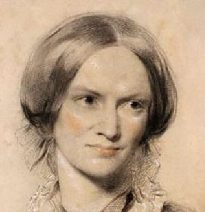

Jane Eyre
Charlotte Brontë
Book Club October 1, 2023
I know no medium; I never in my life have known any medium in my dealings with positive hard characters, antagonistic to my own, between absolute submission and determined revolt. I have always faithfully observed the one, up to the very moment of bursting, sometimes with volcanic vehemence, into the other…
This statement by Jane Eyre, made late in the novel, is one of her few moments of self-critical self-insight, and is I think a key to understanding the story laid out in the work.

It is a novel of gothic horror, but it was Brontë’s genius to situate that horror not in an exotic or supernatural milieu, but in the commonplace setting that millions of her readers shared as the reality of their everyday lives. The essence of the gothic genre is the sense of being beset by relentless, implacable, pitiless forces of doom.1 The cliches of the genre up to this point had required the likes of monsters, insane stalkers or tyrannical overlords. Here, the forces of doom are of the most horrifying kind: the ordinary but inescapable social, institutional and psychological pressures of the day.
The novel incorporates many themes and raises many issues; of class, gender, race, society vs. the individual, etc., that remain relevant and are endlessly, perhaps worthily, worked over in discussion of it. But a collection of themes and issues does not constitute a story. Not even the plot itself necessarily makes up the story.
The story of Jane Eyre is: young Jane finds herself in the milieu of a gothic horror story, which is nothing more or less than the everyday life of a young, poor orphan of her time. She is beset by monsters and tormentors, and though she is exceptional enough to be aware of her plight, she is helpless within it. After her first move to a dark and foreboding location, she finds people who can express kindness toward her, but they are no less helpless than she is in the grip of their institution. She finds herself literally in the embrace of death. She moves to the home of a shapeshifting trickster in the form of a Gytrash, and a Vampyre. The former becomes a man, and in her discourse with him she finds for the first time she is able to find some freedom of action unconstrained by gothic forces, to have an actual give-and-take with someone, and this begins to humanize both of them. When their bubble bursts and she is denied this discourse, she - most horrifyingly - transforms into the monster of the story. She becomes pitiless and implacable, ruins lives, and dashes toward death. Instead of dying she crosses a threshold of some sort into a nameless place and is identified as a spectre. Her revivification begins when she gets to know her double reflecting her former life, a self-involved, love-denying pilgrim who is crucifying himself. Once she recognizes herself in him, and him in herself, time and space collapse and she is able to re-cross the threshold back into a human life, finding the aforementioned medium in which she has control of herself, and is able to love and to discourse with the world itself. Her love and discourse fix the shapeshifter into a deformed but permanent human state; and in his own return to the human world, his vision recovers; not entirely, but sufficiently that he is always in the condition of seeing the light at the end of the tunnel.
In the context above which I have tried to define, Jane Eyre is not only a gothic horror story, but perhaps the culminatory novel of the genre - it recasts the genre from a freak show into something set within the full context of human experience, and comes across as a classic in the sense Raymond Chandler meant: “a piece of writing which exhausts the possibilities of its form and can hardly be surpassed.”2
The question of why she falls in love with her employer Rochster is answered by Jane herself: she is first attracted to him because she feels he is the first person in her life she is able to have an effect on, who responds to her and allows her to respond to him:
I never seemed in his way; he did not take fits of chilling hauteur: when he met me unexpectedly the encounter seemed welcome; he had always a word and sometimes a smile for me; when summoned by formal invitation to his presence, I was honored by a cordiality of reception that made me feel I really possessed the power to amuse him, and that these evening conferences were sought as much for his pleasure as for my benefit.
In the mirror reflection of Rochester that Jane holds up to the reader, one sees by degrees that he has lived the very same kind of life as her; beset and boxed in by forces that he can’t control or even contend with, even though the two have virtually nothing in common in their biographies or backgrounds. Yet he sees in her what she does in him, someone who responds, who reciprocates, who affects and is affected:
when addressed, you lifted a keen, a daring, and a glowing eye to your interlocutor’s face; there was penetration and power in each glance you gave; when plied by close questions, you found ready and round answers. Very soon you seemed to get used to me - I believe you felt the existence of sympathy between you and your grim and cross master, Jane; for it was astonishing to see how quickly a certain pleasant ease tranquillized your manner… I was at once content and stimulated with what I saw…
This is of course in contrast to her experience with the Reed family, and even at her boarding school: her best friend Helen, although kind and animated by Christian grace was passive and imperturbable, the very image of someone immured by gothic forces. She did not struggle against her impending death or question her fate at God’s hand despite Jane’s urgings and anxious attendings. The contrasting quality and depth of Jane’s interactions with Rochester proved transformative.
But when she finds out at her wedding altar that he is already married, she is not sufficiently transformed to break her pattern of lashing out at the forces she still feels oppress her. Tragically she is overwhelmed by her instinctive response and becomes what she has beheld, she is implacable and pitiless in her rejection of Rochester’s earnest plea to share a simple life with him outside any institutional bounds. Like her friend Helen, she uses her inflexible Christian principles to shut herself off from a discourse of love, and imposes a horrifying fate on Rochester. In short, she becomes a gothic monster.
Jane leaves and stalks across the heath like a Gytrash dog herself, like Rochester when she first met him, and like him she gradually becomes human again, in the uncanny interzone where she finds she has a family. And it is the relationship established with her cousin St. John that catalyzes the completion of her transformation.
Jane notes how distant and taciturn St. John is in company, often disappearing behind a book or withdrawing to his study. It doesn’t seem to occur to her consciously that this might be how she came across to others in her earlier life. She notes with dismay that he is pushing away his love Rosamund and passing up the opportunity to spend his life with her out of unwillingness to compromise his Christian principles. She never explicitly registers that she did the exact same thing with respect to Rochester. And when St. John proposes to her, and she counters with an offer to accompany him to India as a partner, to pursue a missionary passion outside the socially-expected institutional fetters of marriage, Jane does not perceive that Rochester made quite the same kind of offer to her. She turned him down flat, just as St. John refused her offer, and for the same reasons: Christian principle and social convention.
Though blind on the conscious level to the parallels between them, St. John works on her on a deeper level and she finds herself empathizing with him. She senses
a depth where lay turbid dregs of disappointment - where moved troubling impulses of insatiate yearnings and disquieting aspirations. I was sure St. John Rivers - pure-lived, conscientious, zealous as he was — had not yet found that peace of God which passeth all understanding; he had no more found it, I thought, than had I; with my concealed and racking regrets for my broken idol and lost elysium - regrets to which I have latterly avoided referring; but which possessed me and tyrannized over me ruthlessly.
To encounter one’s opposite number, and to recognize oneself in the other and the other in oneself, is the beginning of psyche; that is, development of a sense of identity not socially given, but internally generated, strong enough to resist the buffets of terrifying external forces and act out of one’s own passion and will. When Jane gives as good as she gets from St. John, and she neither submits nor revolts as previously, she shows that she has found her medium, reached a new equilibrium. Upon leaving him finally she says: “It was my turn to assume ascendency. My powers were in play, and in force.”
Psyche is the formerly absent necessary prerequisite for real love. To attain it Jane had to go on her journey through the looking glass, and encounter her shadow, which at last clarified her to herself. From there she resolves to claim her love and seeks out Rochester without any thought to what social or institutional framework her love might be realized in. She is out of the matrix of the forces of horror that formerly oppressed her. It is simply her good fortune that Rochester is now free to marry, a literary trick in a literary milieu.
To portray in Jane Eyre the power and danger of gothic horror as it arises in the everyday, with such fluency in the language and images of the genre, was a great imaginative accomplishment. To go beyond that and endorse passionate discourse between fugitive allies and antagonists as the counter-strategy to terror and despair is to make the case for literature itself. And in that sense the novel completes the gothic genre’s cycle of development, and redeems it.